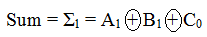
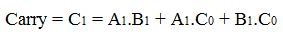
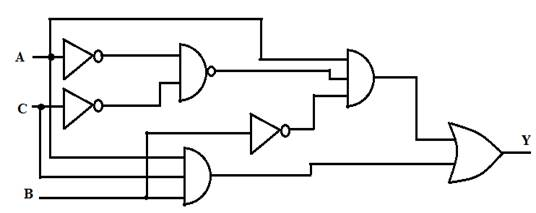
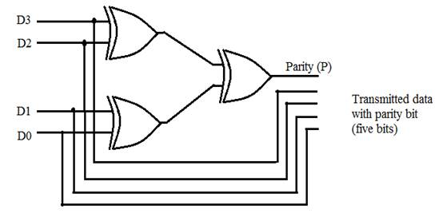
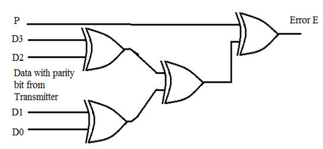

POST-TEST
Perform the following assignments using simulator and discuss the results in your peer groups or with your Faculty:
|
Assignment #1 |
a. Prepare a truth table of an Exclusive-OR gate. b. Design and implement an Exclusive-OR gate using basic logic gates. b. Simulate and verify the truth table. |
|
Assignment #2 |
Full Adder: A full adder is a digital circuit that adds two binary digits with the carry from the previous stage. i.e. It performs the addition operation A1 + B1 + C0 and produces a Sum and a Carry output:   a. Build the Full Adder Circuit using AND,OR & XOR gates and Simulate the design. b. Verify the function table of the Full adder. |
|
Assignment #3 |
Prepare a truth table for a Digital Application Circuit that has two inputs A & B and outputs X & Y such that: a. When B = 0, output X will be 0, and output Y will follow input A. b. When B = 1, output X will follow input A, and output Y will be 0. |
|
Assignment #4 |
a. Draw the circuit for application quoted in Assignment #3 using NAND gates only. b. Simulate and Verify the function of the logic circuit. |
|
Assignment #5 |
a. Refer Assignment # 2: Draw the Full Adder using NAND gates & XOR gates only. b. Simulate and verify the truth table. |
|
Assignment #6 |
a. Consider A1 A0 as a two-bit binary number and B1 B0 another two-bit binary number. A's and B's can take values 00, 01, 10, 11. Design a logic circuit, that has A1 A0, B1, B0 as inputs and a. Produces an output that goes HIGH only when the two binary numbers A1 A0 and B1 B0 are EQUAL. b. Produces an output that goes HIGH only when the two binary numbers A1 A0 > B1 B0. c. Produces an output that goes HIGH only when the two binary numbers A1 A0 < B1 B0. Hint: Prepare a 4-input truth table. b. Simulate the same using two-input gates and verify its functionality. |
|
Assignment #7 |
Analyse and Simplify the logic circuit shown below:  a. Write down the simplified expression for output Y. b. Implement the expression obtained in 'a' using two-input NAND gates only. Verify the simulation results. c. Implement the expression obtained in 'a' using two-input NOR gates only. Verify the simulation results. |
|
Assignment #8 |
a. Half Subtractor: Design a Half Subtractor that performs one bit subtraction and produces outputs: Difference and Borrow. b. Using generalized Simulator, Simulate and Verify its truth table. c. Full Subtractor: Design a Full Subtractor that performs subtraction of two bits and a previous borrow and produces outputs: Difference and Borrow. d. Using generalized Simulator, Simulate and Verify its truth table. |
|
Assignment #9 |
Application: Even Parity Generator: A group of four bits (D3 D2 D1 D0) is used as data to be transmitted and it uses an even parity bit. A transmitter can attach a parity bit to the data bits before transmitting it to a receiver for single-bit error detection. A parity generation system is shown in figure below:  a. Simulate this parity bit generator circuit. b. Determine the parity generator's output for each of the following inputs: i) 0110 ii)1110 iii) 0000 iv) 0101 |
|
Assignment #10 |
Application: Even Parity Checker: Data+ Parity (five bits) generated in Assignment #9 are connected to a receiver's parity checker system which produces an error E that indicates whether a single-bit error has occurred. Error E=1 when error & E = 0 when no error  a. Simulate the parity checker system. b. Determine the parity checker's output for following set of inputs: i) P = 0 & D3 D2 D1 D0 = 1010 ii) P = 1 & D3 D2 D1 D0 = 1110 |